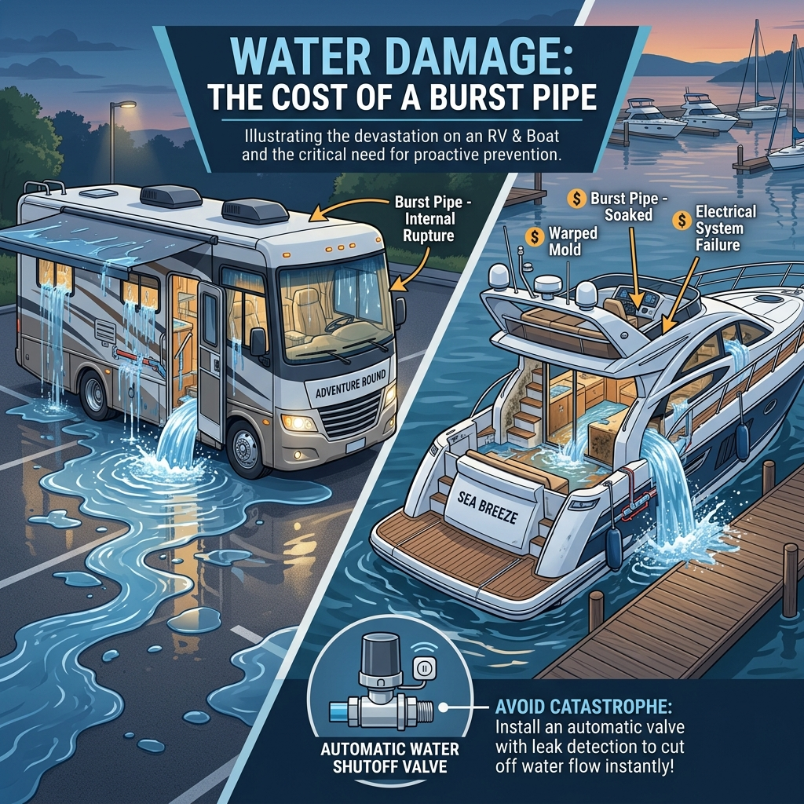
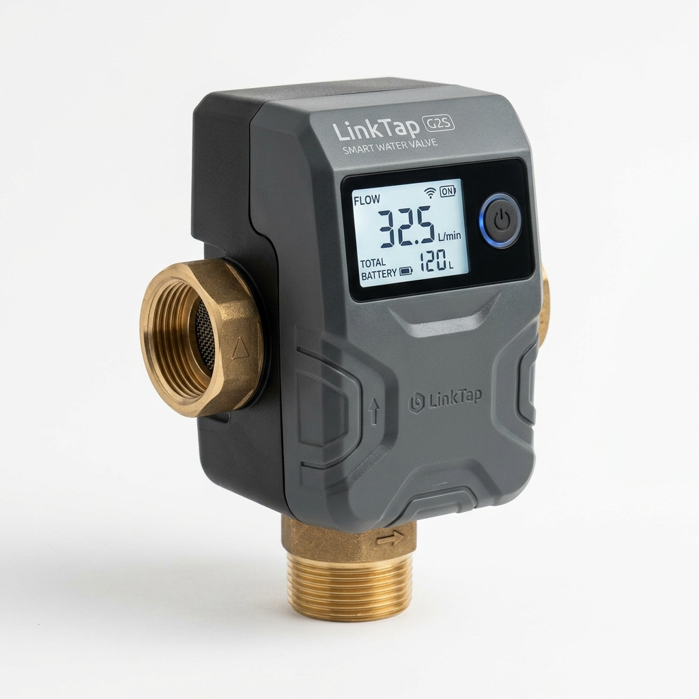
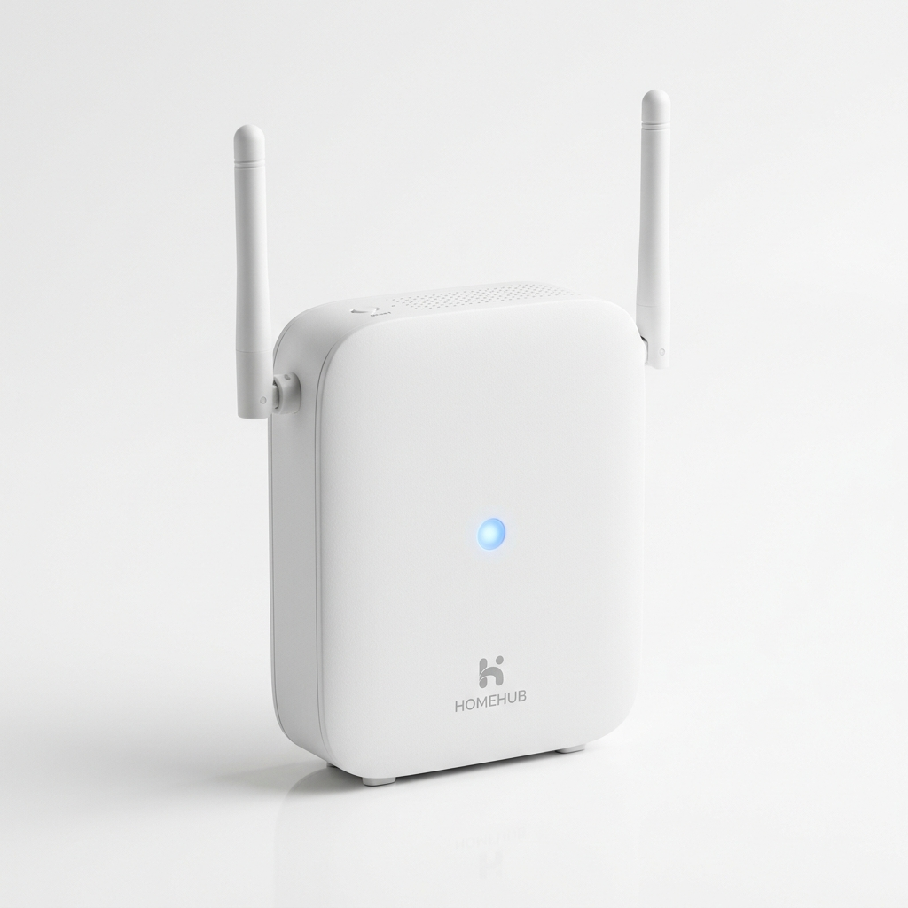
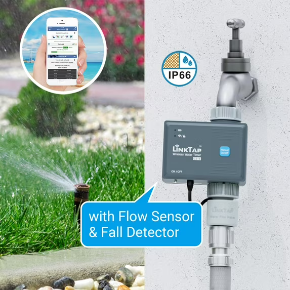
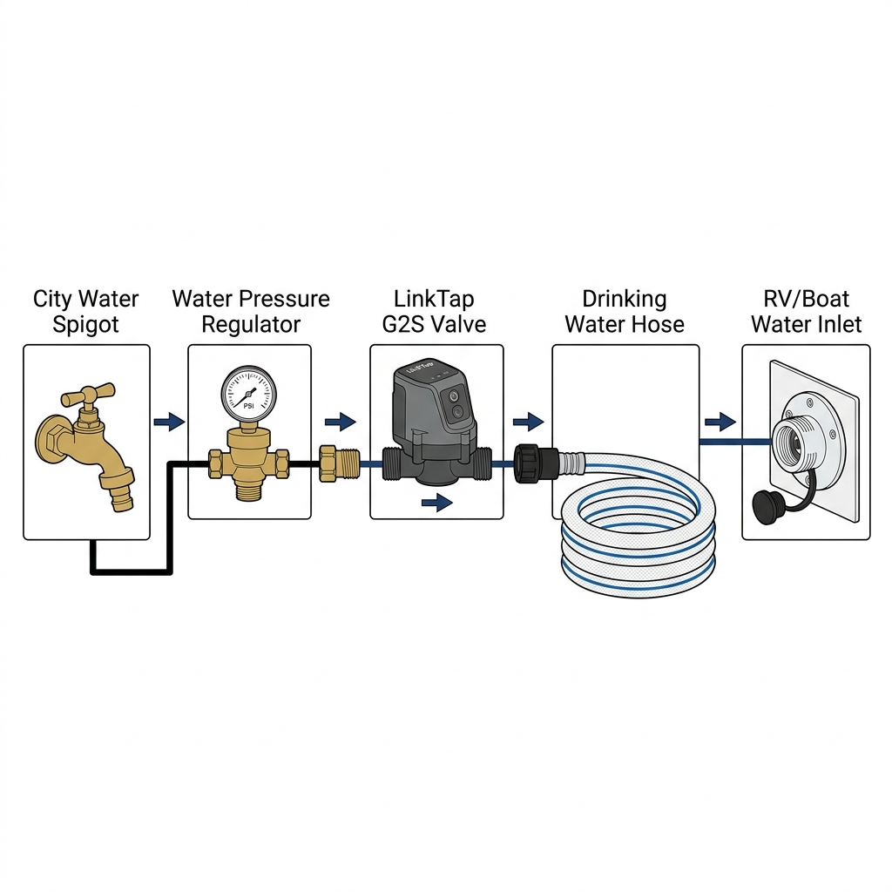
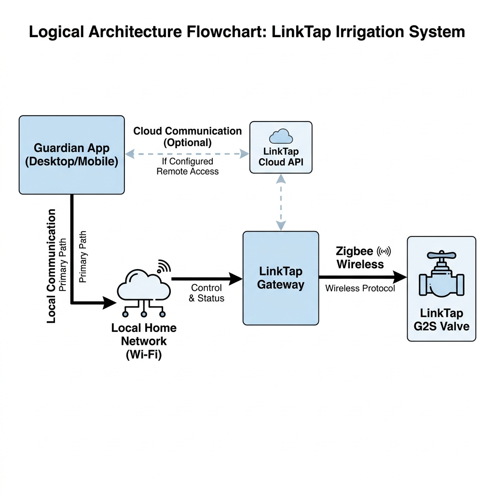

A free, open-source water safety dashboard using LinkTap sprinkler hardware. Monitor flow rate and automatically shut off your water supply to prevent flooding.
Boats and RVs are susceptible to water damage from burst pipes when connected to municipal water supplies. Boat & RV Guardian serves as an automated safety sentry using the LinkTap API.

A burst pipe while connected to city water can cause catastrophic flooding if left unchecked.
Instead of relying purely on hardware limits, the Guardian app runs on your device and sends a continuous "heartbeat" to the valve. If a pipe bursts and water usage exceeds your configured safe limits (duration or volume), the valve shuts off. If your device loses internet or the app is closed, the LinkTap hardware's fail-safe kicks in and shuts the valve down automatically.
There are many inexpensive Wi-Fi water valves on the market (often white-labeled through the Tuya smart home platform). However, they are fundamentally inadequate for critical safety applications like Boat/RV flood prevention for several reasons:
To use all features of the Guardian app, specific LinkTap hardware is required. (Note: Purchasing through the affiliate links below helps support the open-source project!)

Must be the G2S (or newer G1S/G4S) model because it includes a built-in flow meter to track exact gallons used. Older models cannot perform volume-based shutoffs.
Buy on Amazon
Required to bridge your home Wi-Fi network to the Valve via Zigbee. It also provides the essential Local API endpoints for instant app communication.
Buy on Amazon
Highly recommended. Always install this standard regulator after the LinkTap valve to ensure the water pressure entering your RV or Boat is safely reduced (40-50 PSI).
Buy on AmazonThis diagram illustrates the standard plumbing sequence. Crucially, the LinkTap G2S valve must be installed right next to the city water spigot (the source), rather than at the RV/Boat inlet. This ensures that the entire length of your drinking water hose is protected and will be shut off if it bursts.

This flowchart shows how the Guardian App communicates with your physical valve. By default, the native app connects directly to the LinkTap Gateway over your Local Wi-Fi network, providing instant response times without relying on an active internet connection.

Because setting up a Cloud API Key requires logging into the LinkTap web portal on a computer, the Local HTTP API is the primary and recommended way to use Guardian. It provides internet-free reliability and immediate response times.
Note: Due to browser security (CORS), the Local API is only supported using our native Desktop or Android apps.
If you prefer to use the web-based dashboard, you can generate a Cloud API Key by logging into the LinkTap API for Developers page. Then connect via the cloud:
While the web dashboard is accessible from any browser, downloading a native app enables background running and Local API support.